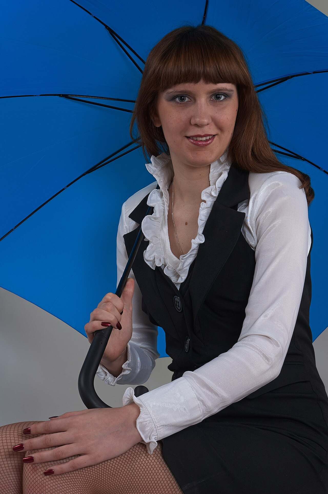
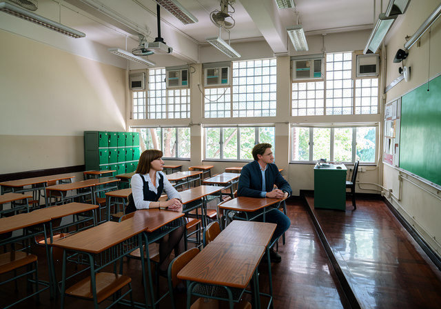

flux-2-klein
all at once (3 inputs)
5 credits
all at once (3 inputs)
5 credits



flux-2-klein
5 cr
5 cr

room yes · Maya yes/partly · Leo yes/partly · extra people yes (0) · staging partly · one photo yes
Room layout and perspective preserved; similar hair, faces mostly in profile. Both look toward board, not each other; foreground desks empty. Sunlight present.
Room layout and perspective preserved; similar hair, faces mostly in profile. Both look toward board, not each other; foreground desks empty. Sunlight present.
prompt
Create ONE photorealistic widescreen 16:9 still, the first frame of a classroom scene. Reference image 1 is the CLASSROOM, the actual room, not inspiration: preserve its rows of brown wooden desks with dark metal frames, large grid windows along the back wall with trees outside, green chalkboard on the right wall, green lockers at left, ceiling fluorescents and fans, polished dark floor and the original perspective. Reference image 2 is MAYA, a student: preserve her precise face and brown hair with a blunt fringe; white blouse and dark vest; NO umbrella, no studio props, no fishnets; seated at a desk like an ordinary student. Reference image 3 is LEO, a student: the young man in the old black-and-white portrait; preserve his facial features and swept-back hair but render him in full colour in present-day casual clothes, no bow tie, no suit, no frame. Add the people into the room naturally, at a size where faces are clearly visible; the room's light, perspective and floor stay as photographed. Maya and Leo sit at two neighbouring desks in the front row, turned slightly toward each other as if talking; the rest of the room is empty. Morning sunlight through these windows. Each person must be recognisably the person in their reference, in colour, no props from the reference photos, no other people, no text, no watermark, no collage or split frame; one coherent photograph.